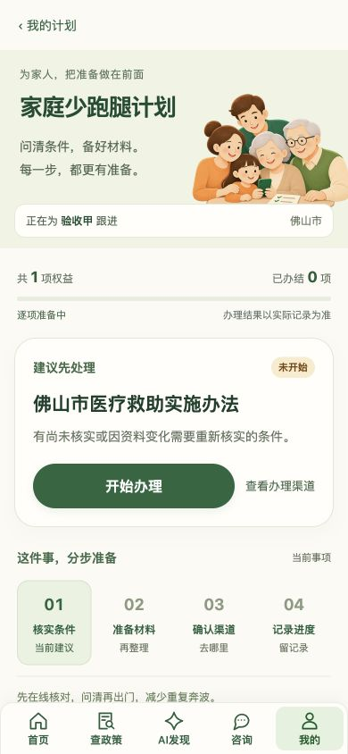

查看原始截图
查看原始截图

查看原始截图初版首屏存在导航样式缺失。查看初版滚动后的查询内容，并可与右侧最终版对照。
初版：开始优化前的 V3.3（85718fe）；最终版：已恢复原有视觉细节后的当前版本。
17 个主要页面使用同一份合成演示数据、390 × 844 手机视口，均按页面顶部原样捕获。
查看原始截图
查看原始截图初版首屏存在导航样式缺失。查看初版滚动后的查询内容，并可与右侧最终版对照。
原始截图可点击放大。演示使用隔离合成数据，真实 AI 与联网搜索质量不属于本次视觉对比结论。查询历史初版的导航样式缺失按实际保留，未为对比修饰原版。